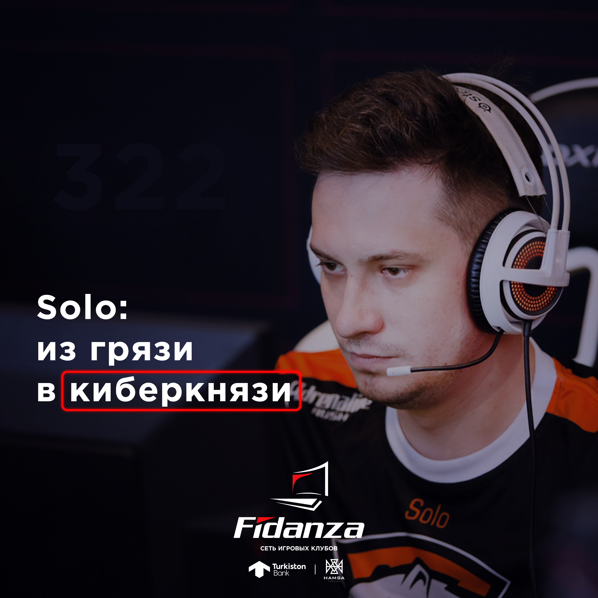

>Blog
The story of Solo
There are such professions that ordinary people look at and think - for this, what else do they pay money for? You know, like a sommelier who just drinks wine and gets paid. So, one of the relatively new such professions is cybersports. But the path of the modern esports player is thorny and dangerous. All my time I have to kill for training, and, as a result: the first girl at 25, an abandoned university and overweight. But there are those who were able to cope with all these problems and achieve success both in their careers and in their personal lives. Let's get to know one of these guys - Alexei "Solo" Berezin.
Solo, or SoloLineAbuse, or Solo 322 - I'll call it Solo - began his career after graduating from college. Actually, it was difficult to call it a career at that time. He met with Wormtail and they started, therefore, to gamble first in the dot-box, and then in the second dot-box. Oh yes, Khvost is Sanya Dashkevich, a member of the Na`Vi team, champion of The International 2011. Well, you know Khvost, he makes funny comments on professional Dota now. So, gamali Solich with a tail for the soul, but suddenly adulthood began. I want to eat, you know. Solo began wandering around all sorts of non-name-teams and received some pennies for it. I was looking for YOUR team. June 16, 2013. The day when the whole world heard about Solych. Lyosha then participated in a Dota match as part of the RoX.KIS team. This match did not decide anything and Solych decided to cheat a little. He bet $ 100 against his team and lost to the rink. The drain was straightforward, both viewers and commentators noticed it. And naturally, the organizers of the tournament found out everything. The solo came to my heart's content - a lifetime ban on Starladder tournaments and a bad reputation. Solych cut exactly $ 322 at his bet. It was after this incident that the nickname Solo 322 became attached to him, and this number became a meme far beyond Dota. It is pronounced, by the way, three-two-two.
So that you do not think that Lesha is a bad person, I will immediately tell you about his reaction then and now. When he was caught cheating, he immediately admitted his guilt. He apologized to his team's fans, apologized to the team and the entire community. The ban was removed from him a year later, and the community eventually forgave (although it did not forget). Today, every journalist considers it his duty to mention this case during his interview with Solich. For him, this is no longer even a tricky question - he has long since laundered his reputation, but the past is in the past. He explains the case as follows. Today, when a player can cut a couple of dollars in one tournament, winning $ 322 seems ridiculous. But then things were different. There was practically no money in the industry yet, but I wanted to eat. These were 2010s, they survived as best they could.
After this incident, no one wanted to take Solo to the team for a while. He was streaming with Dred (this is such an analyst now, learn the materiel, if that's what) and continued to train actively. In 2015, his work was finally rewarded - he got into and established himself in the Vega Squadron team. In the same year, Vega passed qualifiers at the International and took a fairly large tournament - ESL One New York. After a failure at the qualifiers International 2016 Solich left Vega.
In 2016, the big guys in the esports world suggested building a team around Solo. We looked for cool guys in the CIS and celebrated the birth of a new team - Virtus.Pro. And then it began. Virtus just blew up the CIS Dota, they became the new Na`Vi. We took The Summit 6, silver in the Kiev Major, secured the championship at The Summit 7, and then at The Summit 8. In general, they were torn and thrown. In 2018 they took 5th-6th place at The International. And all this time the team performed under the captaincy of our humble Lesha aka Solo.